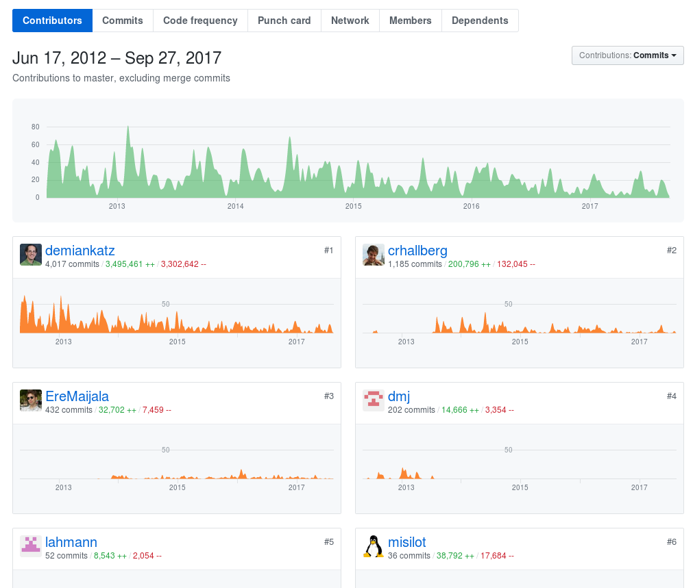
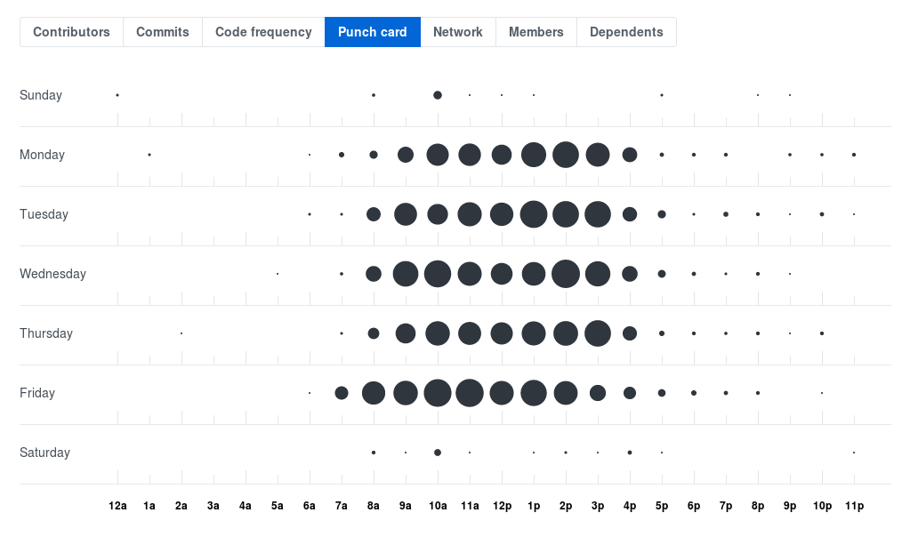

10 Jahre VuFind
Wie steht's um die Gesundheit der Open Source Community?
VuFind Anwendertreffen 2017, 28.9.2017, Hamburg
Keynote von Felix Lohmeier
Gesundheit?
- In einer Lehrveranstaltung an der HAW Hamburg (WS 2016/17) habe ich mit den Studierenden Pro und Contra von Open Source diskutiert.
- These: Bei Wahl von Open Source sollte für wichtige Dienste nur Software eingesetzt werden, die von einer lebendigen Community aus Interessierten und Nutzenden weiterentwickelt wird.
- VuFind habe ich damals als Beispiel für eine gesunde Open Source Community angeführt. Hier jetzt eine systematischere Betrachtung.
Agenda
- Anamnese und Befunde
- Verdachtsdiagnose
- Therapievorschlag
10 Jahre VuFind
- Erster öffentlicher Release 0.5 am 18.7.2007
- Juli 2007 bis Mai 2012
- Code in Sourceforge Subversion
- Zur frühen Geschichte siehe Vortrag "Die Vufind Märchenstunde" von Till Kinstler und Gerald Steilen auf dem 1. VuFind Anwendertreffen 2012 in Leipzig.
- Juni 2012 bis heute
- Code in GitHub Repository
- Auf diesen Teil beziehen sich die folgenden Analysen
Erster Eindruck
- Repocheck.com zählt Tickets (Issues) und externe Beiträge (Pull Requests) im vergangenen Monat
- Setzt offene und geschlossene Dinge ins Verhältnis und normalisiert jeweils auf Skala 0-10
- Gewichtung: 66% Pull Requests + 34% Issues
Indikatoren
- Anzahl und Diversität der Beitragenden (Contributors)
- Regelmäßigkeit der Beiträge (Commits)
- Anzahl von Tickets (Issues) und vergangene Zeit bis diese abgeschlossen werden
- Anzahl von externen Beiträgen (Pull Requests) und vergangene Zeit bis diese abgeschlossen werden
- Aktivität in Mailinglisten, Chat und Foren
- Regelmäßigkeit von Videokonferenzen
- Konferenzen und Anwendertreffen
- Anzahl von Installationen / Downloads
- ... (s.a. Open Source Guides - Open Source Metrics)
GitHub Visualizer
GitHub Pull Requests
525 abgeschlossen seit Juli 2012, davon 132 von Villanova University (Chris Hallberg, Demian Katz)
GitHub Contributors
GitHub Punch card
Open Hub
VuFind selbst verweist auf die Statistiken von Open Hub der Sicherheitsfirma Black Duck und hat unten rechts im Footer der Webseite ein Widget eingebaut.
Open Hub Activity
Open Hub Contributors
Open Hub Contributors
Dashboard mit Grimoirelab / Cauldron.io
Grimoire Lab ist ein Open-Source-Toolset für Software Development Analytics. Die Firma Biterga unterhält zusätzlich einen Webdienst unter Cauldron.io
Cauldron.io Dashboard

Cauldron.io Geolocation
Cauldron.io Top Submitters
Cauldron.io Pull Requests
CHAOSS
- Komplexere Metriken sind in Entwicklung, Daten liegen leider noch nicht vor.
- Neues Projekt der Linux Foundation Community Health Analytics Open Source Software (CHAOSS)
- Weitreichender Entwurf für Metriken steht zur Diskussion offen

CHAOSS Entwurf
CHAOSS Entwurf
CHAOSS Entwurf

CHAOSS Entwurf
Datengrundlage
Gezeigte Statistiken basieren auf der Historie des GitHub-Accounts vufind-org.
Erweiterungen, die in Forks vorgehalten und nicht via Pull Requests in die Hauptentwicklung zurückgespielt werden, wurden nicht erfasst.
Tool forked.yannick.io
erleichtert das Auffinden von aktiven Forks
Vergleich mit GitHub
Diagnose
Auffälligkeiten im Sinne einer Verdachtsdiagnose
Verdachtsdiagnose
Gefahr der Zersplitterung
Patient ist aktuell kerngesund und behandlungsbereit (sonst wäre heute niemand hier auf dem Anwendertreffen)
Forks
Nicht alle Erweiterungen und Anpassungen fließen in die Kernentwicklung zurück
Versteckt sich noch etwas außerhalb der "master" branches in den GitHub-Repositorien? Für Außenstehende nicht leicht ersichtlich.
Vorschlag: Beschreibungstext der Repos anpassen, gilt auch für bereits unter Vufind.de Gelistete.
Modularität
Regelmäßig wiederkehrende Forderungen
Beispiel VuFind-Anwendertreffen 2015:
- Vorgehensmodell zur nachhaltigen Entwicklung von lokalen und globalen Erweiterungen (Dr. Jochen Lienhard)
- "Sind wir ein wenig füllig um die Hüften geworden?" Gedanken und Vorschläge zu mehr Modularisierung und Schnittstellen in der VuFind 2/3 Architektur (Günter Hipler)
Verschiedene Versionen
Upgrades auf neue Releases zeitverzögert, stattdessen eigene Entwicklungspfade mit alten VuFind-Versionen
Releases:
- v4.0 08.07.2017
- v3.0 22.04.2016
- v2.0 21.06.2013
- v1.0 15.07.2010
Nach Stand in VuFind Wiki nur TU Ilmenau auf Version 4.
Zusammenhalt der Community
Absprung von Partnern?
Beispiel: GBV Discovery-Service mit Eigenentwicklung Lukida statt VuFind
Schwächung der Entwicklungsressourcen; Villanova hat übrigens nur 4 IT-Leute auf der Staff-Liste (davon arbeiten 2 für VuFind)
Therapievorschlag
Zur Prävention
Kräfte bündeln
Diversität nutzen
Heute 16:30 Uhr
Liveschaltung nach Villanova (Richard Redweik, UB Leipzig; Demian Katz, Villanova University)
9./10. Oktober
VuFind Summit 2017 an der Villanova University
(Teilnahme via Livestream)
Institutionelle Verankerung durch Nutzergemeinschaften
Heute 15:00 Uhr
Workshop Entwicklungskooperationen in der VuFind-Community (Matthias Finck, Effective Webwork; Leander Seige, UB Leipzig)
Mehr gemeinsame Entwicklung
Morgen 11:30 Uhr
Vortrag zur Modularisierung von VuFind
(Hajo Seng, SUB Hamburg)
VuFind Einsteiger-Tutorial
Eine Studentin hat in einer Projektarbeit an der HAW Hamburg VuFind eigenständig installiert, die Beispieldaten aus dem Seminar (Katalog der HAW Hamburg mit 500.000 Records) eingespielt und das System vorgeführt. Sie hat sehr von dem Einsteiger-Tutorial von Stefan Niesner profitiert.
VuFind Einsteiger-Tutorial
VuFind Einsteiger-Tutorial
Für die Lehre an der HAW Chur (Sep 2017 - Jan 2018) will ich VuFind einsetzen. Dazu habe ich mir vorgenommen, die Anleitung zu aktualisieren. Mein Commitment:
- Fork erstellen (CC-BY-SA Lizenz)
- ODT/PDF in Markdown umwandeln
- Gitbook mit Suchfunktion einrichten
- Anleitung für neueste VuFind-Version anpassen
- Pull Request an Stefan Niesner stellen
Fragen ans Plenum
Was macht Ihr bereits?
Wozu könnt Ihr Euch "committen"?
Lightning Talks Morgen 12:30 Uhr
Credits / Lizenz
- Icons: Font Awesome (MIT Licence)
- Präsentations-Framework: Reveal.js (MIT Licence)
- Eigenes: CC-BY